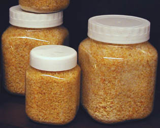
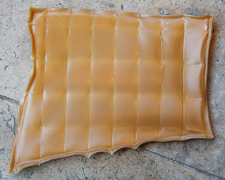

|
La
colle de peau
|
La caractéristique la plus notoire de la colle de peau, par rapport
à la caséine
notamment, c'est sa souplesse.
Parmi les colles anciennes, seules elle et la colle
de poisson authentique, contenant du collagène,
allient suffisamment de finesse et de souplesse pour l'enduction des supports
souples comme les toiles. Pourtant, elles sont assez solides et résistantes pour
polir du bronze (cf. passage in Les abrasifs).
Aujourd'hui, des problèmes de pénurie liés
semble-t-il à de nouvelles réglementations (temporaires ? définitives ?
bruits de couloirs ?) concernant tant la fabrication que
l'importation, font que les
rares colles de peau disponibles sont généralement de qualité médiocre (tirant très
faible).
Quelle
peau ?
Il s'agit, dans le contexte classique des Beaux-arts, de peau de lapin.
|
Quelle peau ?
Caractéristiques
physico-chimiques, utilisation commune
Préparation de la colle
de peau, utilisation pour l'encollage de la toile
La colle de
peau utilisée pour l'encollage du bois
La colle de
peau utilisée comme liant (peinture à la colle de peau).
A
chaud
Liquéfaction
à froid |
Cependant, dans le passé d'autres colles de peaux animales ont été utilisées
dans des champs très proches. Tout particulièrement, les déchets de fabrication
des parchemins (à l'ancienne, parchemins animaux,
voir lien) ont été utilisés pour
fabriquer la colle dite "de brochette" qui est également une colle aux
collagènes, tout comme la colle de poisson.
Dans la suite de cette article nous nous concentrerons cependant sur la colle
de peau de lapin de manière exclusive.
A lire aussi (in Courrier des Lecteurs) :
Totin : retour rétro sur cette colle de peau
Caractéristiques physico-chimiques, utilisation
commune
Diluant :
eau
Température de liquéfaction ≥ 37°C
L'acétone,
l'acétate d'alumine, l'alun
et l'alcool auraient une action
imperméabilisante ou insolubilisante sur la colle de peau. Cette action semble cependant sujette à caution.
Ces produits rendraient les gélatines friables selon Xavier de Langlais.
Nous n'avons recueilli pour l'instant aucun autre témoignage à ce sujet.
[sur ce point, lire le
courrier d'une lectrice
dédié à
une enduction à la colle de peau]
Le formol
aurait une action violemment dissolvante.
L'acide phénique et le
nitrobenzène sont signalés comme
conservateurs. Attention : ce ne sont pas des produits anodins. L'ail est
également mentionné (lire l'article qui lui est consacré).
La colle de peau est surtout employée comme produit
produit d'encollage des toiles,
sujet qui sera donc abordé en premier lieu dans cet article. Cet exposé intéressera de toutes manières toute personne souhaitant
en faire un autre usage (enduction
du bois, utilisation comme liant à
peindre, etc.) car la préparation est sensiblement identique dans tous les
cas.

Préparation de la colle
de peau,
utilisation
pour l'encollage de la toile
La colle de peau de lapin (dite "colle Totin", du nom d'une
ancienne marque), qui a rendu dans le
passé d'inestimables services comme enduit des supports souples, semble un rempart beaucoup trop
faible contre l'humidité comparativement aux produits industriels actuels et même
intrinsèquement : en milieu fortement humide
(par temps de forte pluie), les toiles
se détendent au point de former un
"ventre" sur le châssis.
Nous avons recueilli des témoignages sur ce
phénomène, constaté à plusieurs reprises par plusieurs personnes, concernant
des toiles préparées par des peintres différents. Cette brutale baisse de tension, d'un aspect
assez inquiétant, peut altérer la couche picturale des tableaux peints à l'huile de
manière irrémédiable. D'ailleurs, pourquoi ne pas citer Xavier de Langlais
: "La sensibilité de la gélatine à l'humidité et sa coagulation
rapide dès que la colle cesse d'être chaude sont les deux grands défauts de
ce produit."
Il n'est pas exclu que l'hygroscopie de la colle de peau soit encore
accrue par l'adjonction massive de glycérine dans les
produits contemporains. Comme l'indique aussi Xavier de
Langlais, cet assouplissant pourrait accentuer ce défaut. Mais c'est avant tout une question de
proportion. La glycérine ne devrait jamais dépasser 5% du poids du produit. Or,
nous ne savons rien des quantités éventuellement utilisées par les fabricants.
La composition réelle des colles de peau est incertaine :
substituts, adjuvants (glycérine, comme nous le
disions, mélasse), etc.
Ajoutons que le procédé de préparation et d'encollage à la colle de peau
- aussi utile ait-il été dans le passé - se présente comme une
liste d'inconvénients : il faut
* broyer la colle en poudre ;
* calculer la proportion d'eau à adjoindre (voir ci-dessous, proportions) ;
* faire
mariner 24 heures, y compris pour la version en grains, contrairement à ce
qu'annoncent certains auteurs (3 heures, 12 heures, c'est insuffisant au regard des
fabricants eux-mêmes : l'eau ne peut pénétrer que lentement dans les
longues fibres intriquées), dans un récipient propre, en isolant
totalement le mélange de l'extérieur avec un plastique alimentaire, sans quoi il pourrirait par la suite ;
* cuire 1/4 d'heure en petite quantité au
bain-marie dans un récipient propre pas trop grand, en verre, type pot de
confiture, le plus propre possible (pour diminuer le risque de
pourrissement ultérieur) et isolé du fond de la casserole par un objet
interposé afin d'éviter la casse et surtout une surchauffe au fond du
contenant ;
* enduire immédiatement ou conserver (au
réfrigérateur jusqu'à 5 jours, même
en l'absence de traces d'altération) dans un plat large où vous viendrez
puiser des portions à réchauffer ;
* appliquer la colle à chaud, mais pas
brûlante (elle traverserait la toile). L'odeur est alors assez
incommodante pour dissuader certains peintres ;
* laissez l'excédent se refroidir, se gélifier, conserver dans les
conditions indiquées ci-dessus.
Vous croyez avoir fini ?
Vous avez tout faux ! Il fallait préparer deux couches avec deux
concentrations de colle différentes !
En fait, dès le début, il vous faut calculer DEUX proportions d'eau à
adjoindre à la poudre car il faut une préparation maigre (5-6g)
pour la première couche et une grasse (8-11g)
pour la seconde.
Mais certains peintres n'appliquant qu'une couche de colle de peau et
semblent satisfaits du résultat.
Malgré ces inconvénients déjà signalés depuis longtemps par les plus
illustres auteurs, l'école de la peau de lapin demeure bien implantée en
France et dans l'ensemble de l'Europe.
Proportions

* Colle très tirante, épaisse : 20g pour 100ml d'eau. Une telle
concentration ne peut être employée pour encoller une toile. Le châssis
risquerait d'éclater.
* Colle faible : 5g pour 100ml.
* Colle "normale", de 5 à 11g.
* Liant : 7 à 9g.
Il est usuel de parler de "colle à n grammes" pour évoquer une
concentration de poudre de colle de peau pour 100ml d'eau (soit
un décilitre).
Ci-contre, une plaque de colle de peau de lapin, à réduire en grains ou en
poudre avant usage.
Réchauffement
La colle de peau refroidie, devenue "gel", ne peut être
réchauffée et refroidie indéfiniment. Il vaut mieux ne réchauffer que la quantité
nécessaire et suffisante, au bain-marie.
Rappel : la température de liquéfaction de la colle de peau est ≥ 37°C.
Ne jamais
faire bouillir : cela détruirait la colle.
En grains ou en plaques ?
Certains préfèrent les grains car il est plus facile de mesurer leurs poids
et de les réduire en poudre. Par contre, quelques auteurs affirment que les
plaques sont plus pures, mais il nous est impossible de confirmer ou d'infirmer
cette information pour l'instant.
La colle de peau utilisée pour
l'encollage du bois
Lire le paragraphe consacré à l'encollage
à la peau de lapin dans l'article sur la préparation du bois.
La colle de peau comme liant
A chaud
Il faut d'abord mentionner deux aspects très importants de l'utilisation de
ce procédé de peinture :
* un inconvénient : il faut travailler à chaud, c'est à dire VITE et de
manière organisée, sans
rompre la "chaîne du chaud" ! Cette contrainte évoque la
peinture à la cire
chaude.
* un avantage, du moins une particularité remarquable : la colle de peau est
un gel thixotrope, pouvant revenir à l'état fluide lorsqu'il est agité
(par des mouvements de brosse notamment), mais restant d'une bonne tenue au repos
dans des conditions hygrométriques normales.
Concernant ce dernier point, spécifions que d'une manière générale, quelle
que soit la technique de peinture employée, un médium
à peindre (donc un additif) thixotrope ne pose
en principe que de maigres problèmes lors d'un
déplacement ou d'un léger réchauffement parce que l'architecture moléculaire de la pâte est déjà soutenue par
un liant indifférent aux conditions de stockage et de transport.
Par contre, un liant thixotrope pose un problème de fragilité
structurelle évident, même si les répercussions de cette fragilité ne sont pas
toujours clairement sensibles
immédiatement à l'échelle de la vision
humaine.
Cependant, ne nous bornons pas à ne citer que des
inconvénients : certains auteurs ont raison de mentionner les qualités plastiques
de la colle de peau, qui donnerait "des pâtes fluides et
nerveuses, des aplats veloutés, de superbes vélatures...
et finalement des films aux réelles qualités techniques et esthétiques".
C'est tout à fait vrai, sauf en ce qui concerne "l'aspect velouté", un terme
excessif pour désigner une sorte de satiné.
De nombreux gessos (lire l'article sur
l'histoire et la fabrication de gessos) ont été réalisés anciennement,
et même de nos jours (notamment dans les domaines de la dorure et de la
restauration) avec une colle de peau mêlée de pigments blancs. Cinq à douze
couches peuvent être nécessaires. Chaque couche doit en principe être
appliquée avant le séchage complet de la couche précédente pour un bon
accrochage. Tout ponçage doit être réalisé après séchage profond, c'est à
dire après 48 heures environ.
Pour finir, signalons qu'il y a lieu, selon certains auteurs, de tamiser le
pigment avant de l'incorporer à chaud sans remuer sur le moment, afin
d'éviter les grumeaux. Un peu plus tard, lorsque l'imbibition est entamée,
c'est le moment de remuer, mais doucement, pour éviter de piéger l'air.
Concentration de la colle utilisée comme liant à chaud : voir proportions.
Liquéfaction
à froid
C'est l'acide acétique qui permet d'empêcher la gélification.
Il rend possible une utilisation a
tempera, pratiquées par quelques peintres, mais nous ne disposons pas de
témoignages directs (merci de nous faire
par de cette expérience si vous êtes adepte de ce procédé de peinture).
Évidemment, si la solution obtenue s'avérait acide,
elle disqualifierait certains pigments et produits alcalins
dont les composés à base de calcium et autre
métaux alcalinoterreux.
Attention : l'emploi de vinaigre n'est pas
forcément à conseiller car celui-ci contient non seulement de l'acide acétique,
mais aussi un aldéhyde acétique qui pourrait avoir
un effet plus destructeur. Des tests préalables sont conseillés.
Lire aussi L'enduction des toiles
(paragraphe "Quelle colle ?"), Les
colles, La gélatine.
Retour
début de page
|